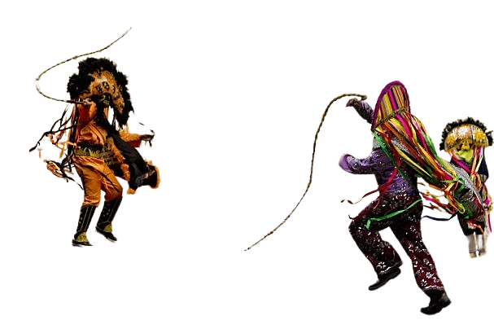

O guia da folia é um projeto de TCC
feito por 5 alunos do Instituto de Oportunidade social (IOS)
este projeto foi criado para deixar o conhecimento do carnaval pernambucano mais pratico para todos que tiverem curiosidade.

feito por 5 alunos do Instituto de Oportunidade social (IOS)
este projeto foi criado para deixar o conhecimento do carnaval pernambucano mais pratico para todos que tiverem curiosidade.